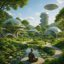
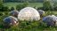
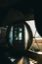

Compassionate Community
A thriving intentional community within two hours of the San Francisco Bay Area — vegan values, sanctuary stewardship, and education as a refuge for people and animals alike.
Our vision is to create a thriving intentional community that exemplifies compassionate living through vegan values, sanctuary stewardship, and education — serving as a refuge for people and animals.
Our mission is to provide a sustainable rural haven for individuals of all ages who are passionate about animal rights, veganism, and conscious living — combining co-housing, sanctuary care, and education to support both resident members and mission-aligned visitors.
ABC envisions eco-friendly casitas and shared spaces inspired by geodesic living — resilient, efficient, and woven into the land. We are exploring partners such as Geoship and their bioceramic dome homes for future building phases.



"Individual homes, shared meals, and room to gather — rural living built for connection."
Each full-time resident, member, or family has their own eco-friendly casita — private space rooted in the land, with the richness of community always nearby. Geodesic and bioceramic dome designs (such as Geoship) are among the shelter approaches we are exploring for efficiency, resilience, and harmony with the landscape.
A central community building anchors daily life: a large kitchen, dining area, lounge, and flexible event space for meals, workshops, and celebration.
Guest rooms or cottages welcome short-term program participants and visiting advocates — so the community can host the movement, not only house its members.
"Sanctuary is not a backdrop — it is the heart of why we gather."
ABC is home to a modest number of rescued animals, each known by name and story. Residents participate in daily care and education, learning ethical stewardship through practice.
Species may include pigs, cows, donkeys, chickens, dogs, and cats — chosen with care for the land, the animals' wellbeing, and meaningful engagement with visitors.
Public programs invite guests to witness compassionate animal care firsthand — turning empathy into understanding, and understanding into lasting change.
"Education that nourishes the body, calms the mind, and deepens commitment to all beings."
Vegan cooking — weekend intensives and single-day workshops where plant-based cuisine becomes a skill, a joy, and an act of advocacy.
Wellness retreats — yoga, meditation, and aerial programs that support healing and align body-mind practice with plant-based living.
Animal care experiences — hands-on husbandry and sanctuary education for visitors who want to learn by doing.
Retreat space for changemakers — quiet, mission-aligned hosting for founders, activists, and nonprofit teams who need ground to think, plan, and restore.
"A community for people already doing the work — and those ready to begin."
Animal rights & vegan advocates who want to live their values daily, not only campaign for them.
Alternative protein founders, ethical investors, and nonprofit leaders seeking a physical hub near the Bay Area to connect, retreat, and collaborate.
Health-conscious individuals drawn to plant-based wellness, mindful living, and a culture where compassion is the default — not the exception.
"Financial sustainability in service of sanctuary — never the other way around."
Resident monthly fees through lease or equity-based structures that fund operations while keeping membership accessible to mission-aligned households.
Workshop & retreat tuition for vegan cooking, animal care, and wellness programming — weekend intensives and day events.
Short-term stays & event rentals for guests, advocates, and aligned gatherings.
Donor & grant support especially directed toward sanctuary operations, animal care, and public education.
Optional revenue from plant-based products, branded merchandise, or an ABC credit card that channels everyday purchases back into the community's mission.
"From feasibility to sanctuary — a roadmap the movement can learn from."
Land acquisition — feasibility planning for a rural parcel of 20–50 acres, within 90 minutes of the San Francisco Bay Area and no more than two hours from the region's core.
Seed capital — founding group contributions and mission-aligned angel investors to secure the land and begin core infrastructure.
Phase 1 — community house, 3–5 casitas, and basic animal sanctuary infrastructure.
Phase 2 — additional casitas, guesthouses, and expanded programming facilities.
Grants & nonprofit partnerships — funding streams for sanctuary operations, animal care, and advocacy education programs.
A place where compassion is lived — not lectured. Where rescued animals are neighbors, vegan food is shared at every table, and changemakers find rest enough to keep building a world that honors all beautiful creatures.
All Beautiful Creatures (ABC) Compassionate Community
Foster a compassionate, sustainable model of community living that others can study, adapt, and build — proving that vegan values and rural sanctuary can thrive together.
Serve as a refuge for leaders in animal rights and plant-based innovation — a place to restore, connect, and return to the work with renewed clarity.
Educate visitors about ethical animal care and the power of veganism — turning every workshop, tour, and meal into an invitation to live more compassionately.
ABC is in its founding chapter — land feasibility, core design, and the first members who will shape sanctuary care, community rhythm, and programming. If this vision aligns with yours, we would love to hear from you.
Select a designSame content — many skins.